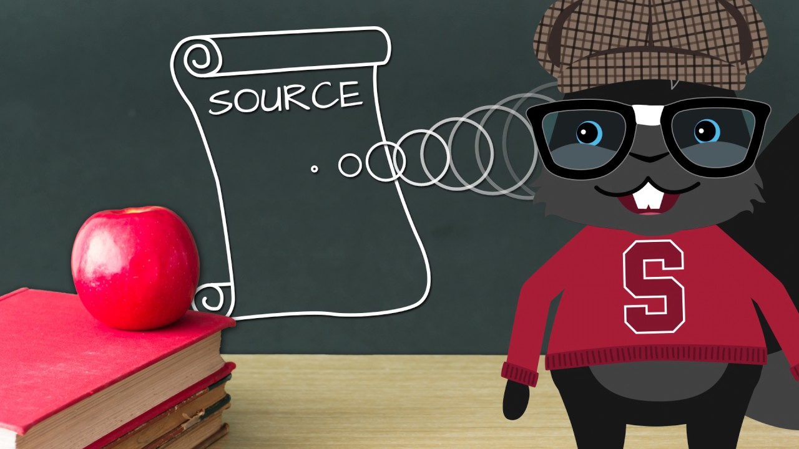
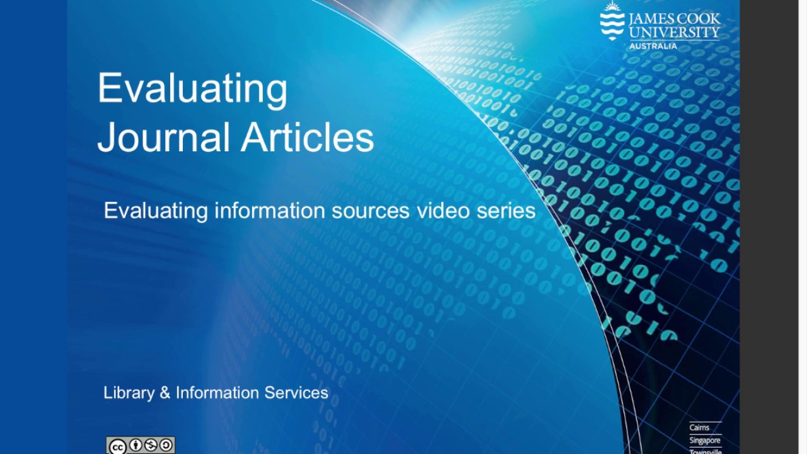

In this unit, you will focus on gaining familiarity with various genres of scholarly literature and getting a sense of how these genres contribute to your own scholarly endeavours. Through first-hand experience you will begin locating, organizing, and evaluating relevant scholarly literature. Two of the major assignments in this course hinge on your ability to conduct an annotated bibliography and critique. Although these assignments are not due until the later in the course, your work in this unit is the foundation for those assignments. The learning activities in this unit will walk you through practical readings and video tutorials on how to access and evaluate scholarly literature.
Topics
Unit 4 is divided into four topics. See the Unit 4 Topics link at the bottom of this page for the course notes on the following topics:
Accessing Scholarly Literature
Utilizing Scholarly Literature
Evaluating Scholarly Literature
Unit Summary
Learning Outcomes
When you have completed this unit, you should be able to:
Employ different search strategies to locate different sources of scholarly literature.
Evaluate the credibility and reliability of sources of scholarly literature.
Document key sources related to your research topic area.
Learning Activities
Here is a checklist of learning activities you will benefit from in completing this unit. You may find it useful for planning your work:
Watch “Preparing Research Questions for a Database Search” to learn how to access scholarly literature and follow the directions about searching for books in the TWU Library.
Read Chapters 5 and 8 in Doing a Systematic Review: A Student’s Guide(Cherry et al., 2023).
Read Chapters 2, 13, and 14 in Introduction to Research in Leadership(Rosch et al., 2023).
Watch “Evaluating Journal Articles” about how to develop research skills.
Assessment: Contribute to the Course Discussions. See Assessment tab in Moodle for details.
Resources
Here are the resources you will need to complete the unit:
Cherry, M. G., Boland, A., & Dickson, R. (2023). Doing a systematic review: A student’s guide (3rd ed.). SAGE Publications.
Rosch, D. M., Kniffin, L. E., & Guthrie, K. L. (2023). Introduction to research in leadership. Information Age Publishing.
This topic will help you gain familiarity with various genres of scholarly literature and help you get a sense of what scholarly sources of information are available, given your own research interests. In this topic, you will also gain first-hand experience in locating, organizing, and evaluating relevant scholarly literature.
Accessing scholarly literature can often be a frustrating process for a couple reasons. First, much of it is published in academic journals or databases that may require subscriptions or institutional access, which means it is not always freely available online. Even with access through a university library, students may struggle to navigate databases or know which sources are most credible and relevant. Second, it takes time to determine what key search terms to use for your chosen topic. It is critical that you complete the learning activity 4.1.1 to better understand how to locate literature and ease potential frustration.
Once you begin locating research it is important to organize your files. For example, as you begin locating research, save your files in folders titled with general topic areas to help keep your findings organized. Additionally, if you are researching the impact of empathy in healthcare, you might save resources in folders titled “empathy,” “healthcare staff,” and “patients.” As you deepen the breadth of your research, you may add additional folders or subfolders with more specific keywords.
Indigenous Knowledge and Literature in Research
Indigenous knowledge systems offer valuable perspectives on leadership, community building, and relational ways of knowing. Accessing literature from an Indigenous perspective involves recognizing oral histories, community storytelling, and collective wisdom as valid and respected sources of knowledge. These forms of knowledge may not always appear in traditional scholarly journals or academic databases.
In many cases, Indigenous research may be classified as grey literature. Grey literature refers to materials produced outside of traditional academic publishing and commercial distribution channels (Cherry et al., 2024). It includes sources such as reports, policy documents, government publications, white papers, working papers, conference presentations, newsletters, and community plans. Grey literature is often created by organizations that work directly with communities, such as Indigenous organizations, non-governmental organizations, and government agencies, to document programs, share findings, and preserve knowledge for practical use or wider distribution. Because it is not subject to the lengthy processes of academic publishing, grey literature is often more current and directly connected to community priorities and emerging issues.
When conducting research from an Indigenous perspective, it is important to include these types of sources. Consider exploring materials authored by Indigenous scholars, Elders, or organizations, and reflect on how traditional knowledge and community-based wisdom align with your research goals.
Genres of Scholarly Literature
Part of your planning and organizing is to recognize various genres of scholarly literature and to be aware of the limitations inherent in each. There are three distinct categories of documents where you can find research reports: books, journal articles, and grey literature as described above (Cherry et al., 2024).
You will often see this sequence followed: A research project is completed, and the research is first published in a Master’s thesis, PhD dissertation, or as a paper in a symposium or conference.
The research report is then submitted to a professional journal for publication and eventually it is incorporated into a book. By the time a dissertation is successfully defended, the actual research may have been conducted two to three years prior. It could easily take another three years for a journal article to make it through the peer-review process and be published. Therefore, the research referenced in the final published journal article could be at least five years old. It could easily take another five years for high quality publishers to work through their review processes and publish something in a book, taking away from the currency of the information.
Table 4.1 below summarizes the relative advantages and disadvantages of each genre of scholarly literature. See Chapter 5 in Doing a Systematic Review: A Student’s Guide (Cherry et al., 2024) for more details about types of evidence available to you:
Table 3.1 Advantages and Disadvantages of Scholarly Literature Genres
Genre
Advantages
Disadvantages
Utility
Summaries (encyclopedias and handbooks)
Generally highest quality
Tend to be dated
Establish a general working knowledge of the field.
Books
Generally high quality
Can be dated
Establish mainstream thought. Most foundational literature is found in books.
Journal Articles
Generally high quality and provide a clear description of actual research. Generally more current than books or summaries.
Generally, will not give a full development of application and implications.
Best available balance between quality and currency
Early-stage Materials (e.g., conference papers, dissertations, newspapers, personal websites)
Most current cutting-edge ideas are found in these materials.
Little review for quality (except for dissertations) and ideas are not usually well developed
Valuable for establishing trends in current thought. Use cautiously
It is notable to mention that high quality journals are determined by the peer review process, the journal’s Impact Factor (IF), and by professional reputation. Peer review is a process used in academic publishing to ensure the quality and credibility of research. In this process, experts in the same field carefully evaluate a manuscript to assess its originality, accuracy, and significance before it is published. Peer review helps maintain high academic standards and provides authors with constructive feedback to improve their work.
The impact factor is a measure of the frequency with which the average article in a journal has been cited in a particular year. The IF is used to measure the importance or rank of a journal by calculating the times its articles are cited. The IF can be found on the home page of most online journals. Knowing where to find this information is important because it allows you to quickly assess the standing of a journal when selecting sources for your research. While impact factor is not the only indicator of quality, it can help you identify widely recognized and frequently cited journals that may contain influential or highly regarded research.
Peer review is the process used by publishers and editors of academic and scholarly journals to ensure that the articles they publish meet the accepted standards of their respective discipline. Manuscripts under consideration for publication are sent to independent experts in the same field (the author’s scholarly or scientific peers) who evaluate the quality of the scholarship, reliability of findings, relevance to the field, appropriateness for the journal, and other discipline-specific criteria.
In summary, understanding how scholarly research is reviewed, published, and ranked is essential for becoming an informed and responsible consumer of research. Tools like peer review and impact factor help you evaluate the credibility, quality, and relevance of academic sources. By using these tools effectively, you can select strong, trustworthy research to support your leadership decisions, academic writing, and future projects.
Activity
📖 Read Chapters 13 and 14 in Introduction to Research in Leadership (Rosch et al., 2023). These two chapters specifically discuss “becoming a critical scholar” and “a lifetime of learning in leadership.”
Click on the library link “How to search for articles.” Begin by selecting one of video tutorials in the section on multi-disciplinary databases such as “Academic Search Complete”.
Watch the video tutorial to get an idea of how to search for a topic in a multi-disciplinary database.
📖 Keeping in mind your specific research topic, use the Academic Search Ultimate database at the TWU library to locate a good example of a journal article.
Click the databases tab and then click the articles and databases link which brings you to a different screen.
In the Database Research Guide screen, you will need to select “A-B” from the A-Z list of databases at the bottom of this page.
Select a relevant database such as “Leadership.”
You will be asked to sign in as a student with your pass ID and password to access the online database.
Once you have signed in, you will be able to type your topic or question in the search window of the selected database.
Searching for Books
Go to the TWU Library and click “Research Guides.”
At the top right, click “Research Help.”
Choose “Research Tutorials.”
On the left side of the screen, click “How to Search for Books.”
Scroll to the bottom of the screen and click “Using EBSCOhost eBooks.”
Watch the “Book Searching Tutorial” video to get an idea of how to search for a topic found in an e-book.
Keeping in mind the research topic you identified, use the library catalog to locate a good example of an e-book.
✏️ Respond to the following in your Reflective Journal.
Reflect on your experience searching for a journal article and an e-book related to your topic. What search terms did you use? Which databases did you try? What worked well, and what challenges did you encounter?
This reflection is a chance to practice describing your search process, which you will need to include in your upcoming assignment. Use this opportunity to think critically about how you locate scholarly sources and how you might improve your search strategies moving forward.
Note: Your Journal is not graded but will help you in your assessment for this unit.
After you have determined which sources you will be accessing, you need to conduct a search and then keep track of your literature search and results. Table 4.1 is an example of how to track your literature search. It is designed to help you document and reflect on your research process as you search for scholarly sources. Keeping detailed notes about where, how, and what you search will help you:
Stay organized and efficient in your research process
Avoid repeating unsuccessful search strategies
Reflect on your approach to improve future searches
Identify the most relevant and useful databases and search terms
Practice a skill that will support your Scoping Review assignment (e.g., documenting your search process for a systematic literature review)
How to use the table:
Search Date: Record the date you conducted the search.
Database/Source: Write the name of the database, journal site, or search engine you used (e.g., ERIC, JSTOR, Google Scholar).
Keywords Used: List the main keywords or phrases you entered in your search. Include combinations or Boolean operators if used (e.g., “transformative learning” AND “early childhood education”).
Filters Applied: Note any filters you used, such as date range, peer-reviewed only, or full text available.
Number of Results: Record how many total search results were returned.
Relevant Articles: Indicate how many of those results were useful or relevant to your topic.
Key Findings/Themes: Briefly summarize what you learned from the articles you found. Look for repeated concepts or themes that could inform your literature review.
Notes: Add any reflections or additional thoughts, such as challenges faced, questions that emerged, or next steps.
Table 4.1
Search Date
Database/Source
Keywords Used
Filters Applied
Number of Results
Relevant Articles
Key Findings/Themes
Notes
e.g., ERIC, JSTOR
“Barriers early childhood educators,” “transformative learning”
e.g., 2010-present, peer-reviewed
50
5
e.g., Barriers include lack of resources, resistance to change
Add additional notes or reflections here
You may use this table throughout your literature search process. It will be a helpful reference when writing your assignment and can also be included as an appendix if your instructor requires evidence of your search strategy. Click here for a literature search table template.
You can also manage your references using an online reference manager that will help you collect, organize, cite, and share your references according to the referencing style you will be using. There are several free, online reference managers available such as Zotero, RefWorks and EndNote. TWU library has a research guide that describes how to use EndNote(n.d.). The library guide will help you sign up for a free EndNote account and will teach you to use EndNote to download and store your citations in folders, input citations into Word documents, and create reference lists.
Review Scholarly Literature
After you have retrieved and organized the results from your database searches you will begin reviewing them. To save time, you do not need to read every article in their entirety.
Instead follow these steps:
Review the titles and abstracts.
For articles that seem related to your research topic, read the introduction, discussion, and conclusion sections. Then, examine the reference list.
If the article still seems worthwhile, read the entire article.
As you work through this process you will develop a collection of literature relevant to your study. Keep these sources organized by using a summary or abstract chart. The chart below is an example of how to keep your sources organized. There is no single correct way to do this, but you will need to develop some sort of system that works for you.
Reference
Research Problem
Purpose, Research Question, or Hypothesis
Data Collection/Procedure
Results/Findings
Author(s), Year, Title, Source
Briefly state the issue the study addresses
Briefly summarize the study’s purpose, research question, or hypothesis
Outline the methods used (e.g., interviews, surveys, sample size)
Summarize main results or findings relevant to your research
Reviewing Literature is an Iterative Process
Be aware that the research process is not always linear. You may have a great research topic or question in mind, but as you begin your initial database and library searches you may find yourself changing or refining your topic. This is a normal part of the process.
Sometimes you will not find any information about your topic because the topic is too new, and no one has done any significant research on the topic yet. Or you may not find information on your topic because you are not using the appropriate search terms or keywords.
If you are having difficulty finding research articles and books on your topic, re-examine your key search terms using strategies such as:
Look up synonyms for your keywords.
Find and use key terms found in the literature you do have.
Activity: Learning Activity
📖 Read Chapter 5 in Doing a Systematic Review: A Student’s Guide (Cherry et al., 2024).
📺 Go to the TWU Library and click “How to Develop Research Skills.” Begin by watching all the video tutorials under the section “Upgrading Your Research Skills.” There are several short videos in this section on Boolean searches, search history, and other search techniques.
✏️ Respond to the following in your Reflective Journal:
Briefly describe your experiences with upgrading your research skills.
What did you find worked well, what did not?
What Boolean searches did you use, what inclusion or exclusion criteria did you select?
Note: Your Journal is not graded but will help you in your assessment for this unit.
Evaluating Scholarly Literature
Once you identify several articles and/or books related to your research topic and skimmed them for relevance, the next step is to evaluate your information sources. Unfortunately, not all information you find will be credible and reliable. Just because you find articles and books at the library does not mean that the information will be accurate or high quality.
As an MA Leadership student, and as a professional, it is imperative that you can critically evaluate information you read to conduct quality research yourself, inform policies, and improve your professional practice.
As an MA Leadership student and a professional, it is imperative that you critically evaluate the information you read. This skill equips you to conduct high-quality research, inform ethical policy decisions, and improve your professional practice. Making decisions based on reliable research leads to more effective leadership. For example, suppose a study suggests that employees are more engaged when given flexible work hours. A manager might use that insight to redesign team schedules to include flexible start times, aiming to improve morale and productivity.
However, not all research is equally trustworthy. If that study was based on a small group from a single department, while a broader study involving several organizations found that structure and routine were more beneficial for engagement, then relying on the smaller study could lead to poor outcomes. This is why the ability to assess the reliability, context, and methodology of research is essential; it ensures you are making informed, ethical, and effective leadership decisions grounded in credible evidence.
This critical lens not only helps leaders evaluate the quality of individual studies, but also encourages them to consider the broader implications of how knowledge is produced and applied. Rosch et al. (2023) define a “critical scholar” as someone who approaches research with a reflective, questioning mindset. Critical scholars challenge conventional wisdom, dominant power structures, and widely accepted norms within their field, often focusing on issues related to justice, equity, and the broader societal impacts of research. They do not take data or theories at face value but analyze how they are constructed, who benefits from them, and who might be marginalized by them.
A critical scholar applies a high level of intellectual rigor to their work by asking deep questions and interrogating the assumptions, power dynamics, and social structures underpinning research. Rigor in this context refers to the critical scholar’s commitment to challenging the status quo and conducting research that holds up to scrutiny, methodologically and ethically. A critical scholar applies a high level of intellectual rigor to their work by asking deep questions and interrogating the assumptions, power dynamics, and social structures underpinning research. Rigor, in this context, means more than following proper methodology. It involves evaluating who is represented in a study and how its conclusions may impact different groups.
For example, imagine a leadership study that claims collaborative leadership styles are the most effective in all workplace settings. Upon closer inspection, the study was conducted only in creative industries like marketing and design. A critical scholar would question whether these findings apply equally to sectors with different operational cultures, such as healthcare or manufacturing. They would dig deeper, considering how context, participant demographics, and underlying assumptions influence the findings. This level of inquiry ensures that research is not only methodologically sound but also ethically grounded and socially aware.
The importance of being a critical scholar lies in ensuring that research does not simply reproduce existing biases or inequalities. Instead, it becomes a tool for promoting social justice and equity. By fostering a more inclusive understanding of leadership and organizational behavior, critical scholars help shape systems that better serve diverse populations and future generations.
To critically evaluate a source for quality and credibility, consider the following:
Authority: Who is the author? What are the author’s credentials, such as their educational background, past writing experience, and expertise on the topic? Is the author’s name cited in other sources or reference lists? A simple google search will help you explore these questions.
Currency: When was the source published? Is the source current or out of date for your topic? Remember the general rule is to use sources that have been published within the past ten years.
Purpose: What is the author’s intention? Is the information the author’s opinion or is the author communicating evidence-based results? Who is the author’s intended audience: the academic community or consumers? Is the author’s point of view objective and impartial? Is the article or book’s language free of emotion or bias?
Content: What kind of information is provided in the article or book? Is it a research article, popular book, or an opinion piece on a blog? If it is a research article, what methodology is used (quantitative, qualitative, etc.). Is the information provided backed up with references or sources? What is the length and quality of the reference list?
Publication type and process: Who published the source? Was the source peer-reviewed? Is the publisher a university press or a large reputable publisher? Is the source published from a government agency? Is the source self-published?
Bias and special interests: According to Cherry et al. (2023), bias occurs in many forms, including language bias and publication bias. For example, “language bias occurs because studies that report positive findings are mostly likely to be published in English-language journals” (Cherry et al., 2023, p. 53) and studies reporting negative or null findings are most likely to be published in non-English language journals. Publication bias occurs when studies reporting positive findings are more likely published in peer-reviewed academic journals. See Chapter 3 in Doing a Systematic Review: A Student’s Guide(Cherry et al., 2023) for more detail.
Activity: Learning Activity
📺 Watch “How to Evaluate Sources” from the Stanford University Libraries(2017) to learn more about how to evaluate your sources.

📖 Read Chapter 8: “Quality Assessment: Where Do I Begin?” in Doing a Systematic Review: A Student’s Guide(Cherry et al., 2023).
📺 Watch the following videos:
“Assessing Online Resources” from the TWU Library “Evaluating a Journal Article” from the JCU Library (2017)

✏️ Respond to the following in your Reflective Journal:
Briefly describe how you found your online sources and whether you think they will be helpful resources for your topic.
What sources of information will you use the most to conduct research on your topic?
How will you evaluate these sources to make sure they are credible and reliable sources of information?
Note: Your Journal is not graded but will help you in your assessment for this unit.
Summary
In this unit, you learned how to access and evaluate scholarly literature, including books, journal articles, and grey literature. You explored different genres of academic sources and developed strategies for organizing your literature searches. You also considered the value of Indigenous knowledge and the importance of including diverse perspectives in your research. Practical tools such as search tracking tables, reference managers, and summary charts were introduced to support your research process. Most importantly, you were introduced to the concept of becoming a critical scholar; someone who engages with research reflectively and ethically to inform leadership decisions, promote justice, and serve the common good. These foundational skills will support your success in upcoming research and course assignments.
Checking Your Learning
Now that you have completed the learning activities and assignments for this unit, check the list below to ensure you can do the following:
Can you identify a research topic of interest?
Can you employ different search strategies to locate different sources of scholarly literature?
Can you evaluate the credibility and reliability of sources of scholarly literature?
References
Badke, W. (n.d.). Using EndNote web (classic or legacy version): A guide to the main features of the bibliographical manager EndNote web. In Trinity Western University. https://libguides.twu.ca/EndNote/Start.
Cherry, G., Boland, A., & Dickson, R. (2023). Doing a systematic review: A student’s guide (3rd ed.). Sage Publications.
Rosch, D. M., Kniffin, L. E., & Guthrie, K. L. (2023). Introduction to research in leadership. Information Age Publishing.
Stanford University Libraries. (2017). How to evaluate sources.
Trinity Western University. (2016). Assessing online resources. Vimeo.